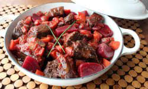

Beef and Beet Stew

I would often visit my family in Oxford, UK during the winter months of January and February. I preferred the bitter, wet weather as an extreme contrast to the mild, sunny winters I’m accustomed to in Southern California. Hearty, comfort meals were a staple during this time and provided wonderful opportunities to cook with my sister. During one of my visits in 2015, my sister was receiving weekly vegetable boxes from the Riverford Farm. These boxes were a wonderful surprise as we wouldn’t know in advance what would be included. A bunch of red beets appeared one week with a pamphlet containing the recipe for “Beef, beetroot and red wine casserole”. The deep burgundy color and subtle sweetness from the beets left me mesmerized.
After coming back to the states, I kept making variations of the stew. Once adjustments became infrequent, I knew it was time to share.
Ingredients
Serves: 4 - 6
- 2 lbs. sirloin, cut into 1” pieces
- 1 ½ tsp salt
- 1 tbs balsamic vinegar
- 1 small onion, diced
- 1 leek, sliced
- 5 garlic cloves, roughly minced
- 1 tsp dried thyme
- 1 tsp dried rosemary
- 1 tsp dried tarragon
- 4 tbsp flour
- 2 cups red wine
- 4 cups beef broth
- 1 (26 oz) container of chopped tomatoes with liquid
- 2 medium beets, cubed
- 1 large carrot, one inch cut
- 1 large parsnip, one inch cut
- 5 large fingerling potatoes, one inch cut
- 2 bay leaves
Steps
- Preheat the oven to 350 degrees F
- Cut the sirloin into 1” pieces and season with ½ tsp salt
- In a large dutch oven over medium heat, brown the meat in batches. Set aside
- Deglaze the bottom of the pan to loosen all leftover browned meat bits with the balsamic vinegar
- Saute the onion and leek until softened, about 5 min
- Throw in the garlic and stir until you can smell all the flavors coming together, about 1 min
- Coat the onion mixture with all the dried herbs
- Place the meat back into the pot and coat with the flour and stir until the flour is cooked and the meat is fully covered with the onion mixture
- Pour the wine and scrape the bottom of the pan again to loosen any additional bits of mixture and meat
- Add the beef broth, chopped tomatoes, all the vegetables, potatoes and the remainder of the salt
- Give it a couple of good stirs, and add the bay leaves
- Bring it all to a boil and cover and simmer in the oven for 2 hours
- The stew is ready once you can pierce the veggies all the way through, and the meat chunks break apart when poked
This is best served with crusty bread to soak up the broth. Feel free to add some chopped parsley for a pop of color against the deep red.